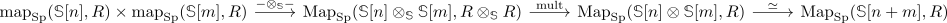

underlying graded ring of a ring spectrum
Definition
Let $R$ be a ring spectrum, then the underlying ℤ-graded Ring is defined as
\begin{align*}
\pi_*(R)
\end{align*}
with the multiplication given by

7.1.1.5
Alternatively
follows from:
Let $R$ be a ring spectrum, then the underlying ℤ-graded Ring is defined as
with the multiplication given by

7.1.1.5
follows from: